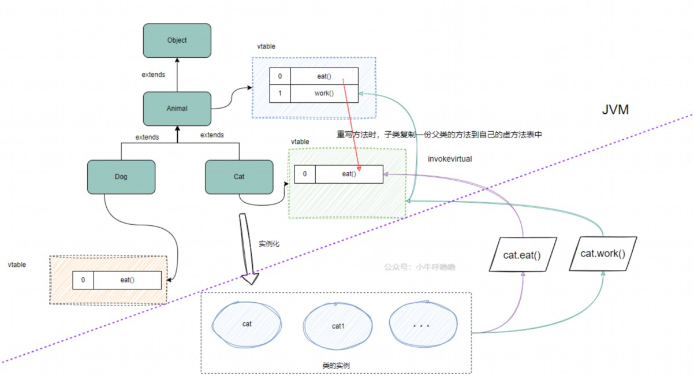

浏览顺序：encapsulation 👉 extends 👉 本文
方法重载和方法重写也是多态，叫做方法的多态
Overload）👉 overload-detailOverride）👉 override-detail比较
| 方法重载 | 方法重写 | |
|---|---|---|
| 位置 | 本类 | 子类 |
| 方法名 | 一样 | 一样 |
| 形参列表 | 不同 | 相同 |
| 返回类型 | 无要求 | 缩小/一样 |
| 访问修饰符 | 无要求 | 扩大/一样 |
（🌟重点）对象的多态。下边用一个案例介绍多态：主人喂很多种类宠物吃很多种类的饭。
Father obj = new Child();
* 本质：父类的引用指向了子类的对象
* obj的编译类型：Father，所以不能访问Child的private变量和方法
* obj的运行类型：Child，所以找方法的时候还是从Child开始找
* 注意⚠️，**属性是不能重写的**，obj.属性，返回的是父类的属性
Father obj = new Child();
(Child)obj // 通过强制转换，向下转型
* 向上转上去的，才能向下转回来
* 可以调用子类所有内容
Animal d = new Dog();）d = new Cat();之前的 d 从 Dog 变成了 Cat）= 号的左边，运行类型看 = 号的右边instanceof(判断的是运行类型是否是后边的类型或者后边类型的子类型)class Base{}
class Child extends Base{}
public class Test(){
public static void main(String[] args){
Base b1 = new Base();
Base b2 = new Child();
System.out.println(b1 instanceof Base); // true
System.out.println(b1 instanceof Child);// false
System.out.println(b2 instanceof Base); // true
System.out.println(b2 instanceof Child);// true
}
}
